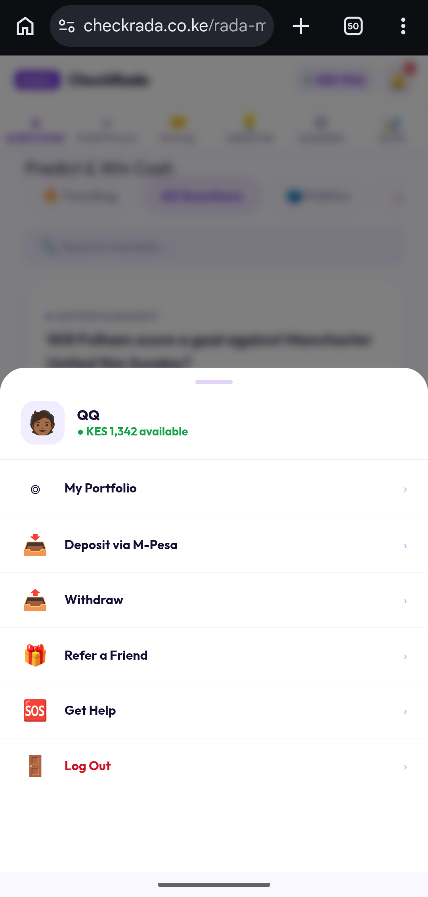
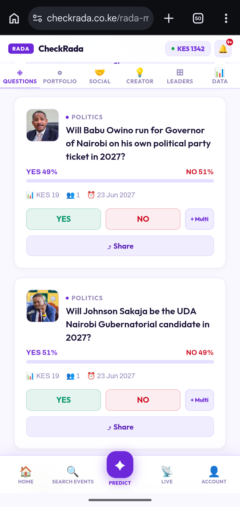
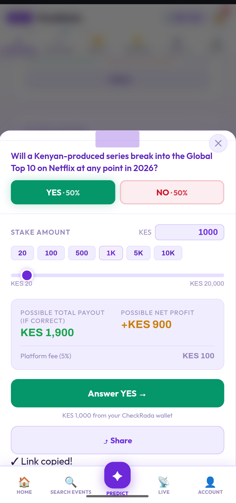
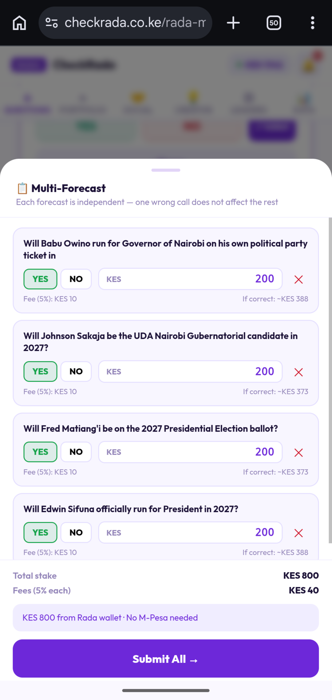
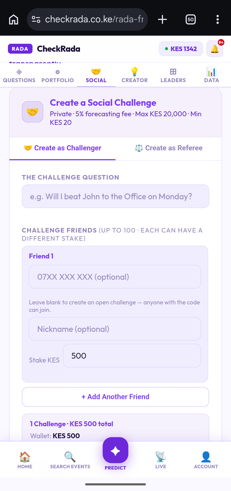
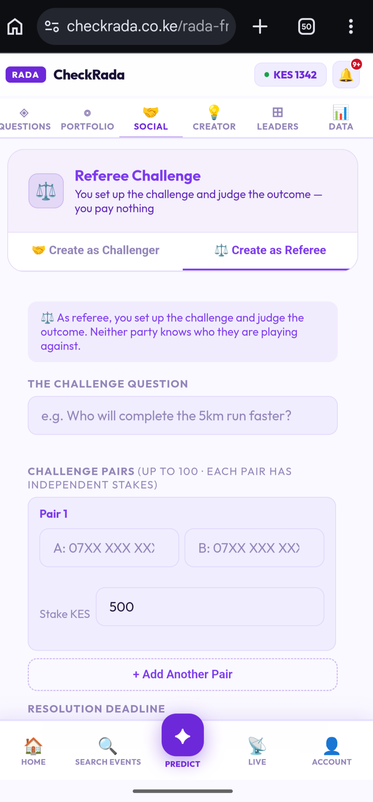
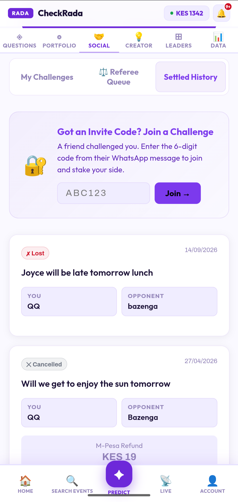
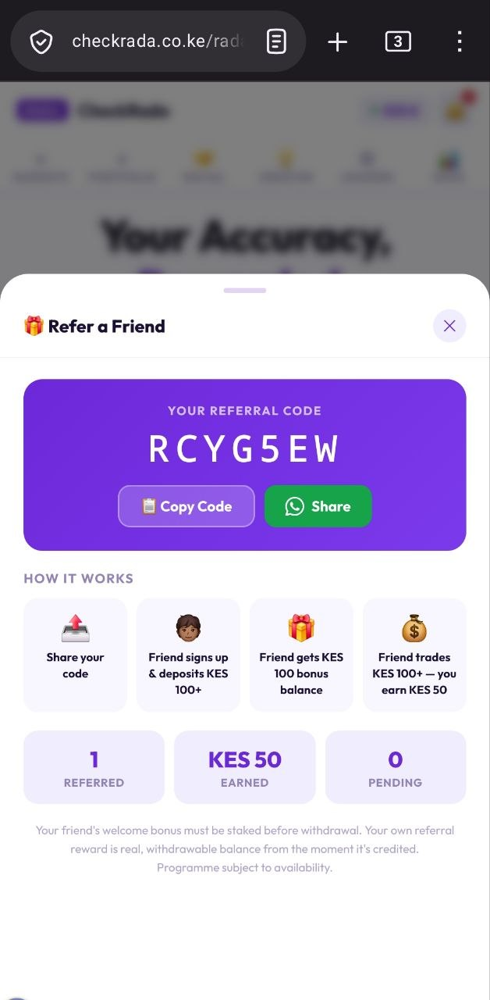

Sign up with your phone number. We'll send a one-time verification code via WhatsApp — enter it to confirm your account. That's it, no paperwork, no waiting period.
All deposits are made in Kenyan Shillings via M-Pesa. You'll find Deposit under your account menu, alongside Withdraw and Refer a Friend.
The usual way — STK Push: Enter an amount and confirm. Your phone receives a prompt directly from M-Pesa — enter your PIN to complete it. Maximum deposit is KES 70,000 per transaction.

Every question on CheckRada is a real-world YES/NO event — something that will genuinely happen or not, by a specific date. The percentages you see (e.g. YES 68% · NO 32%) reflect what the crowd currently believes, based on everyone's forecasts so far — they change as more people forecast, and they're not a guarantee of the outcome.
Minimum stake is KES 20, maximum is KES 20,000 per question or Social Challenge. Before you confirm, the app always shows you the exact possible payout, your possible profit, and the current fee for that specific forecast — so you know precisely what you're agreeing to before you commit.
Once the closing date passes, the question stops accepting new stakes and waits to be resolved against the real outcome. If you're right, your payout — stake plus profit — is credited straight to your wallet automatically.


See the + Multi button next to YES/NO? It lets you queue up several different questions and submit stakes on all of them in one go — paid directly from your CheckRada wallet balance, no M-Pesa prompt needed for the submission itself. Each forecast inside a Multi is completely independent — getting one wrong doesn't affect the others.

Want to settle something with a friend directly, or referee a friendly bet between two other people? Social Challenges give you two different ways to create one.
You're a participant. Set your challenge question and stake, then add friends: challenge up to 100 people in one go, each with their own stake amount. Leave a friend's phone number blank to make it an open challenge — anyone with the code can join, not just the person you had in mind.
You're not playing — you're judging. Set up the question and stake for one or more pairs of friends, and you decide the outcome when it's done. You pay nothing, and neither side even knows who they're up against.


Got sent a 6-digit code on WhatsApp? Open the Social tab and enter it under "Got an Invite Code? Join a Challenge" to jump straight in and stake your side. Your active and past challenges — including anything waiting on you as a referee — are organized under My Challenges, Referee Queue, and Settled History on the same tab.

If both sides agree on the outcome, it settles immediately. If you disagree, a neutral referee can step in — and if it still can't be resolved, CheckRada's team will. A fee applies to the pool either way, shown clearly when you create or join — it's higher specifically when platform intervention is needed, to cover that review.
Share your referral code with a friend from the Refer a Friend screen. Here's exactly how the reward works — it happens in two separate steps, not all at once:
Current thresholds and reward amounts are always shown live on the Refer a Friend screen, since they can be adjusted from time to time.

Have a good question in mind? Propose it on the Creator Hub. Once the CheckRada team approves it and it's published, share your unique market link. Once trading on your question hits KES 1,000 in volume, you start earning a royalty on every trade — credited automatically to your wallet while the question stays active. The current royalty rate is shown on the Creator Hub, since it can be adjusted from time to time.
Check the Leaders tab to see Kenya's top forecasters, ranked by accuracy and earnings. It's a good way to see who's calling things right — and a bit of extra motivation to sharpen your own track record.
Go to your account menu and choose Withdraw. Money goes straight to your registered M-Pesa number — minimum withdrawal is KES 100, maximum is KES 70,000 per transaction, subject to Safaricom M-Pesa service availability.
Something not working, or a question this guide didn't cover? Check the FAQ, or tap Get Help from your account menu to reach support directly.
Start Earning →